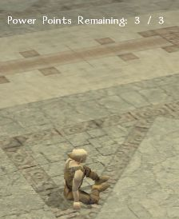
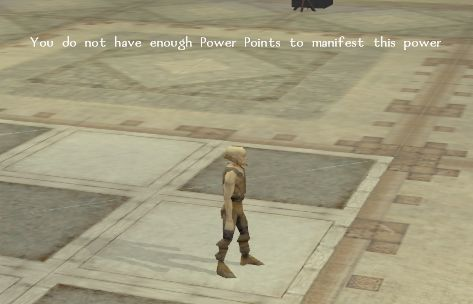

Once you have some powers to use, you need to regain your power points. This is done by resting and once complete you will get a message telling you how many power points you have avaliable.

All psionic powers appear on the class radial. If you have so many that they wont all fit on the first layer, then the radial will expand indefinately. Powers can be added to the quickbar in the same way that feats can be.
Every time you manifest a power, you will get a message in the combat logs telling you how many power points you have remaining. If you try to manifest a power that costs more power points than you have remaining, you will get a floating message telling you so and the power will not be manifest.

Previous Page Next Page